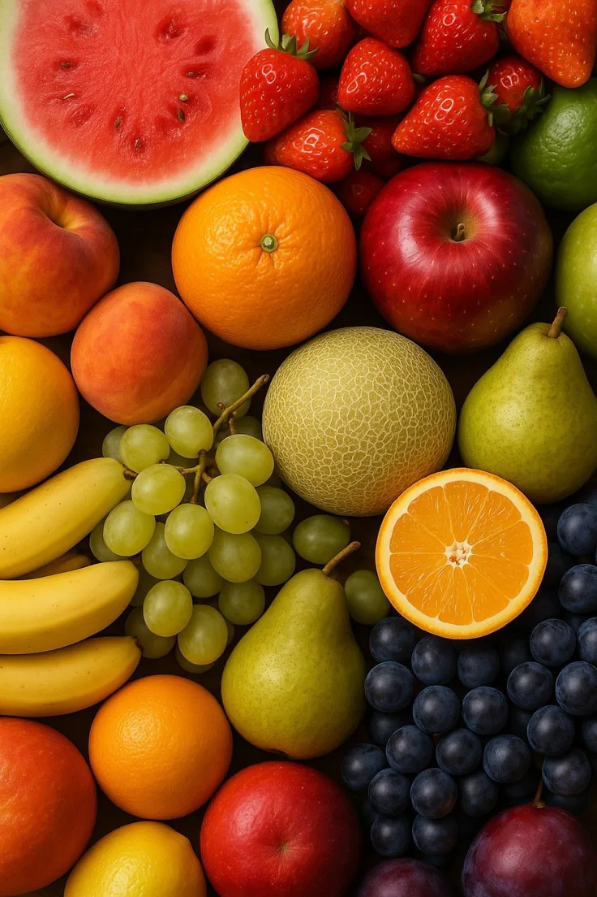
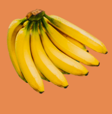
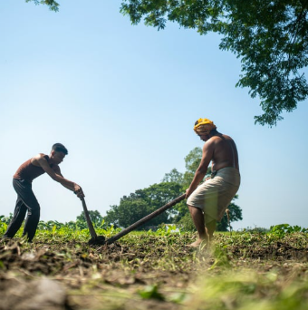
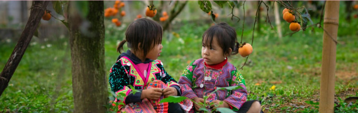

O futuro da fruticultura é sustentável
o que é
beneficios
futuro
concurso agrinho 2026
Fruticultura Sustentável
Agro forte, futuro sustentável: equilíbrio entre produção e meio ambiente

O que é fruticultura sustentável ?
A fruticultura sustentável é uma forma de produzir frutas respeitando o meio ambiente e utilizando os recursos
naturais de maneira consciente. Esse tipo de produção ajuda a preservar o solo, economizar água e diminuir a
poluição causada por produtos químicos.
Além de proteger a natureza, a produção sustentável também garante frutas mais saudáveis e de melhor qualidade
para as pessoas. Os agricultores utilizam técnicas ecológicas que ajudam a manter o equilíbrio ambiental e a
biodiversidade.

banana

uva verde
Benefícios
A prática sustentável traz muitos benefícios para o campo e para a sociedade. Entre eles estão a preservação do meio ambiente, a redução do
desperdício de água, a proteção dos animais e a
melhoria da qualidade dos alimentos.
Com atitudes sustentáveis, os produtores conseguem cultivar frutas sem prejudicar a natureza, garantindo um futuro melhor para as próximas gerações.
Lista de benefícios
Economia de água
Preservação do solo
Redução da poluição
Produção de alimentos saudáveis
Proteção da natureza

fruticultura pro futuro
Cuidar do meio ambiente é uma responsabilidade de todos. A fruticultura sustentável mostra que é possível
produzir alimentos e ao mesmo tempo proteger a natureza. Pequenas atitudes
no campo fazem uma grande diferença para o
planeta.
Quando agricultores utilizam práticas corretas, eles ajudam a construir um futuro mais saudável, equilibrado e
sustentável para toda a sociedade.

Agrinho 2026
Ana Beatriz Propst Barbosa
número:3
turma:1TC
colégio estadual santa cândida
Walyson Oliveira Vieira
número:39
turma:1TC
obrigado pela atenção!